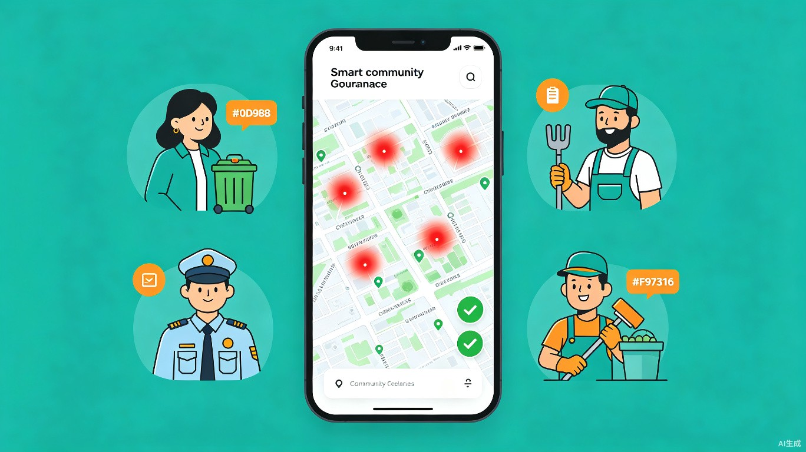
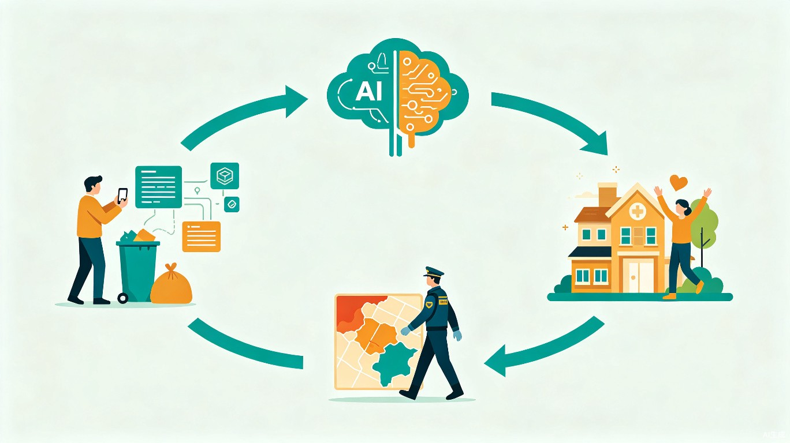

AI治理小区乱丢垃圾现象
社区智能治理系统 - 让随手拍AI分析，让社区更文明
📊 核心数据看板
🏭 系统概述
本系统是面向城市住宅社区的AI智能治理平台，旨在解决社区中普遍存在的乱丢垃圾、高空抛物等不文明行为。系统通过"随手拍上报 + AI智能分析 + 精准巡控治理"的三位一体模式，构建从发现问题到解决问题的完整闭环，实现社区环境的持续改善。
系统由移动端（微信小程序/APP）和管理后台两部分组成，连接物业保安、保洁人员、业主等多方角色，利用AI对举报数据进行时空分析，自动生成治理方案，推动社区共建共治。
⚙ 核心功能
随手拍举报
物业保安、保洁人员、业主发现垃圾或高空抛物后，打开小程序拍照一键上报，系统自动识别GPS定位并标记丢弃地点和时间。
AI智能分析
后台AI引擎对所有上报数据进行时空聚合分析，自动识别垃圾高频区域和高发时段，生成可视化热力图和趋势报告。
精准巡控调度
根据AI分析结果，系统自动排班调度保安在高风险时段前往热点区域重点巡视，提高发现和劝阻效率。
智能监控取证
联动社区监控摄像头，对热点区域进行自动录像取证，记录违规行为，为后续处罚和通报提供证据支撑。
违规处理通报
依据社区公约和相关法律法规，对多次违规的个人进行劝阻、记录、处罚，并在社区公告栏进行通报曝光。
成效评估反馈
AI持续追踪各区域治理成效，对比治理前后数据变化，自动评估措施有效性，形成正向反馈行动闭环。
🔄 工作流程

📱 移动端产品原型
📊 数据分析仪表盘
系统后台利用AI对海量举报数据进行分析，产出多维度的治理洞察。
🌀 AI闭环治理模型
核心创新：正向反馈行动闭环
传统社区治理往往是"发现-处理"的线性模式，缺乏对治理成效的量化评估。本系统的核心创新在于利用AI对举报地点和时段进行持续分析，对比治理前后数据变化，评估各项措施的实际效果，从而不断优化巡控策略和资源配置，建立真正有效的正向反馈行动闭环。
📝 AI治理方案示例
基于AI分析结果，系统自动生成的治理方案示例如下：
| 治理建议 | 目标区域 | 高发时段 | 措施 | 预期效果 |
|---|---|---|---|---|
| 加强A栋楼道巡查 | A栋3-5层 | 06:00-08:00 | 早班保安定点值守 | 减少70%楼道垃圾 |
| B栋高空抛物监控 | B栋12-18层 | 20:00-22:00 | 摄像头角度调整+夜间值守 | 取证率提升90% |
| 中心花园保洁频次 | 东南角绿化带 | 全天均匀 | 增加早晚保洁轮次 | 响应时间缩短50% |
| 地下车库监管 | C区停车场 | 16:00-18:00 | 增设监控+入口检查 | 减少60%车场垃圾 |
👥 目标用户与痛点
物业保安
痛点：不知道垃圾会在哪里出现、何时出现，巡逻靠运气。
价值：AI告诉他们什么时间、去哪个区域重点巡查，巡逻效率大幅提升。
保洁人员
痛点：同样的地方反复清扫，工作重复，缺乏成就感。
价值：根据热点图优化清扫路线和频次，工作量减少，成就感增强。
社区业主
痛点：生活环境被不文明行为破坏，投诉无门或处理太慢。
价值：一键举报快速响应，社区环境改善看得见，生活幸福感提升。
物业公司
痛点：管理成本高、效果差，缺乏数据支撑决策。
价值：数据驱动的科学治理，降低管理成本，提升业主满意度。
⭐ 价值与意义
让AI赋能社区治理，让文明成为一种习惯
本方案的核心价值不仅在于技术实现，更在于构建了一套可持续运转的社区治理新范式。通过AI将被动管理转变为主动预防，将经验决策转变为数据决策，将一次性处理转变为持续优化闭环。
提升治理效率
AI分析替代人工研判，热点识别速度提升10倍以上，保安巡逻效率提升3-5倍。
降低管理成本
精准投放人力资源，避免无效巡逻。据估算，可降低物业人力成本20%-30%。
促进居民共治
业主参与随手拍举报，从"旁观者"变为"参与者"，增强社区归属感和治理合力。
可复制推广
标准化SaaS模式，可快速复制到不同社区、不同城市，具有极强的社会推广价值。